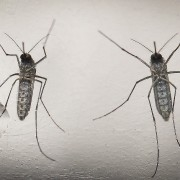

Auch interessant

Gefährliche Mücken
WHO hält Zika-Ausbreitung in Teilen Europas für möglich
In Deutschland ist das Risiko, sich mit dem Zika-Virus anzustecken nur sehr gering. Unter anderem...
mehr ...
Trotz Kritik
Letzter Nachtzug der Bahn fährt im Dezember
Im Schlafabteil zu reisen - das soll mit der Deutschen Bahn ab nächstem Jahr nicht mehr möglich...
mehr ...
ANZEIGE
Welcher Immobilien-Typ bin ich?
Häuschen oder Wohnung? Machen Sie den Online-Test.
mehr ...
Rheinland-Pfalz
52-Jähriger stirbt auf Radtour - Gaffer stören Rettungseinsatz
In Rheinland-Pfalz ist ein 52-jähriger Radfahrer zusammengebrochen und gestorben. Laut Polizei...
mehr ...
Auf Bento
So perfide inszenieren sich Islamisten auf Instagram
mehr ...
powered by plista